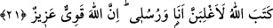

veya fâsıklardan bulunsun farketmez.
21. Allah: Elbette ben ve elçilerim galip geleceğiz, diye yazmıştır. Şüphesiz Allah
güçlüdür, galiptir.
“Allah: Elbette ben ve elçilerim galip geleceğiz, diye yazmıştır.” Âyetteki “Allah
yazmıştır” anlamındaki keteballahü cümlesi, münâfıkların aşağıların en aşağısında
olmalarının sebebini bildiren müstakil cümledir. Mânâsı; “Levh-i mahfuzda (kader
levhasında) tespit edip hükmetmiştir, demektir. Yemin yerine geçen bu cümlenin cevabı
da, yemine cevap tarzında olmuştur. Onlar galib gelmenin ancak çokluk ve kuvvetle
olacağını zan ettiklerinden dolayı cümle hâlindeki bu cevab, tekid lamı ve tekid için
olan şeddeli nun ile “Elbette ben ve elçilerim galip geleceğiz” tarzında
pekiştirilmiştir. Maksad; kuvvetli bir delil ve kılıçla veya bunlardan biriyle galip
gelmektir. Delille üstün gelmek bütün peygamberlerin muvaffak oldukları bir galibiyet
şeklidir. Çünkü onlar dünya ve âhirette övülmüş ve en güzel sonuca ulaşmışlardır.
Ancak kılıçla üstün gelmek bütün peygamberler için söz konusu değildir. Çünkü
onlardan bazıları savaşla emredilmemiştir.
Zeccac şöyle der: Peygamberlerin düşmanlarına üstün gelmesi iki yolla olur:
Onlardan savaş emredilerek gönderilen, savaşla galip gelmiştir. Savaşla emredilmeyen
peygamber ise delille üstün gelmiştir. Delille üstün gelmenin yanısıra bir de kılıç
gücüyle üstün gelinirse işte galibiyetlerin en kuvvetlisi budur.
(Allah’ın) Sana sevgisi olduğu halde,
Seni düşman elinde bırakması mümkün değildir.
Mukatil’den rivâyet edildiğine göre şöyle demiştir: Müminler, “Allah Teâlâ bize
Mekke, Taif, Hayber ve çevresini fethetmeye muvaffak kılarsa, bizi İran ve Bizans’a da
galip kılacağını umarız” demişlerdi. Münâfıkların başı olan Abdullah b. Übey b. Selül
bunun üzerine şöyle dedi: “Bizans ile İran devletlerini siz galip gelerek elde ettiğiniz
bazı köyler gibi mi zannediyorsunuz? Vallahi onlar sizin zannettiğinizden çok daha fazla
sayıda ve daha güçlüdürler. Bunun üzerine işte bu âyet-i kerime nâzil oldu.
Bâkıllî (r.h.) şöyle demiştir: Allah Teâlâ ezelde kendi kendine şu hükmü vermiştir:
Dostlarını, görülen ve görülmeyen şeytanlardan düşmanlarına karşı galip kılacağını ve
onlara velîlik zafer bayrağını vereceğini vaad etmiştir. Dolayısıyla her nerede
yüzlerinden Hak heybetinin nuru ve ışığının yükselmesinden ibâret olan bu sancak
görünürse Allah’ın dostlarına zafer ve güç vermesiyle düşmanlar orada yenilmiş
olurlar.